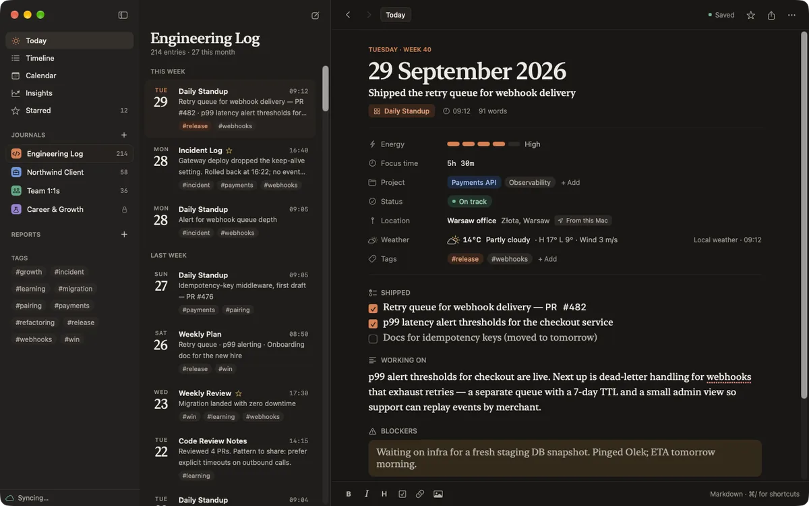
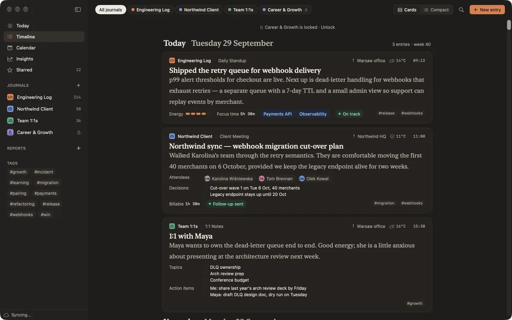
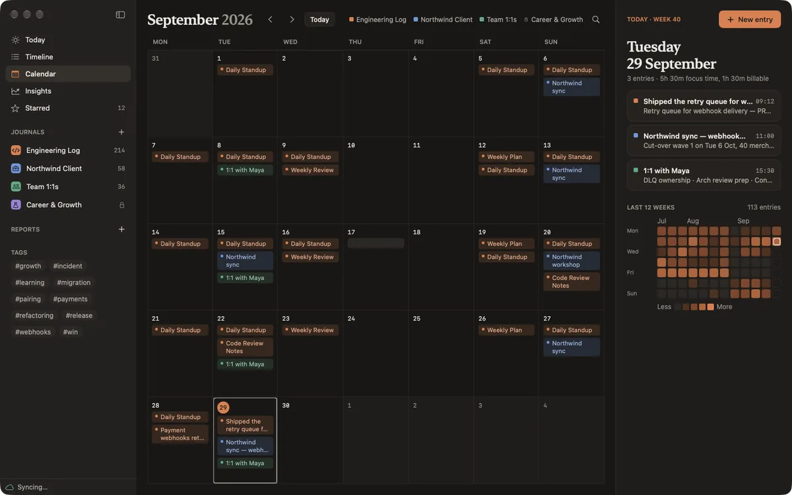
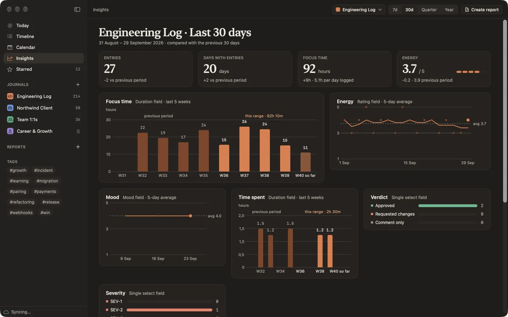
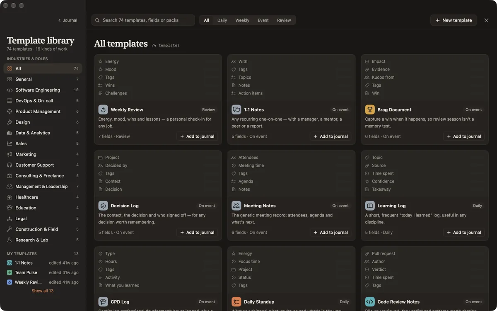

Dayfolio
A calm work journal. One page a day, in the shape of your job. Keep one journal per role or client, start each day from a template made for your work, and turn any week into a report.
On your Mac
05




Screenshots show sample entries in dark mode. Dayfolio follows your Mac's light and dark appearance.
The details
Keep a separate journal for each role, client or area of work. Every entry starts from a template with the fields that matter to you, such as energy, focus time, status, blockers, a checklist or meeting notes, instead of a blank page. Later, that structure turns your days into a timeline, insights and reports you can hand to your manager or client.
Templates made for your work
- A library of 74 templates in 16 packs: software engineering, management, consulting, sales, healthcare, education, legal, construction, research, freelance and more
- Daily logs, stand-ups, 1:1s, incident logs, site logs, weekly reviews and brag documents
- Change any template freely: add, reorder and rename fields, or build your own from scratch
- Entries keep the shape they were written in, so editing a template never rewrites your past
Write quickly, wherever you are
- Rich text with headings, lists, checklists, images and files
- Quick entry from the menu bar with Option-Command-J
- Reminders at the times you choose, per journal
- Each entry notes where you wrote it and what the weather was, if you want it to
Find and look back
- Timeline and calendar across all your journals
- Search with filters for journals, templates, tags, people and projects, including text inside PDFs and images
- Insights chart your ratings, durations and statuses over time
Turn your days into reports
- Weekly, monthly and performance review reports, grouped by date or project
- Save report setups and regenerate them for any week or month
- Optional highlights written on your Mac with Apple Intelligence, on supported Macs
- Export to Markdown, PDF and Word, or print
Private by default
- No account and no tracking. Dayfolio collects no data, and nothing you write is sent to us.
- Lock any journal with Touch ID
- Sync between your Macs through your own iCloud, encrypted (end-to-end with Advanced Data Protection)
- Back up everything, including attachments and settings, to a single Dayfolio archive, and restore it any time
The privacy policy says exactly what Dayfolio does with location, weather and iCloud.
What you need
A Mac running macOS 26 or later, Apple silicon or Intel. The optional highlights need a Mac with Apple Intelligence; everything else works without it. Dayfolio is a native Mac app, built with SwiftUI.
One purchase
Dayfolio is $9.99, once. No subscription, no account and no ads.